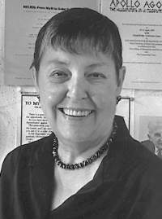

M.E. (Mary Elizabeth) was a professor of English at the New York State College for Teachers and the University at Albany from 1948 until her retirement in 1989 as Distinguished Service Professor of English. Professor Grenander was born in Rewey, Wisconsin on November 21, 1918. She earned the AB (1940), AM (1941), and PhD (1948) degrees from the University of Chicago. Professor Grenander was a professor in the Department of English at the University at Albany and was an authority on the American writer Ambrose Bierce. She also served as director of the Institute of Humanistic Studies (1977-1980). Professor M.E. Grenander died in 1998 at her home in East Berne, NY.
To honor Professor Grenander's outstanding service to and support of the University at Albany, the Department of Special Collections and Archives in the University Libraries was dedicated as the M.E. Grenander Department of Special Collections and Archives on September 27, 1996. This was the first named department in the University Libraries as a result of a major faculty bequest. Professor Grenander was also honored by the University Libraries on May 15, 1994, when Seminar Room 220 in the University Library was dedicated as the M.E. Grenander Seminar Room. Professor Grenander gave more than $1 million to the University at Albany, SUNY, including a $250,000.00 endowment for the department and $500,000 to establish a professorship in memory of her husband, James Corbett, a professor of physics at the University at Albany, who died in 1994.
Professor Grenander's papers in the Department of Special Collections and Archives include correspondence, course syllabi and lecture notes, offprints, a diary of a sabbatical leave, and related information.